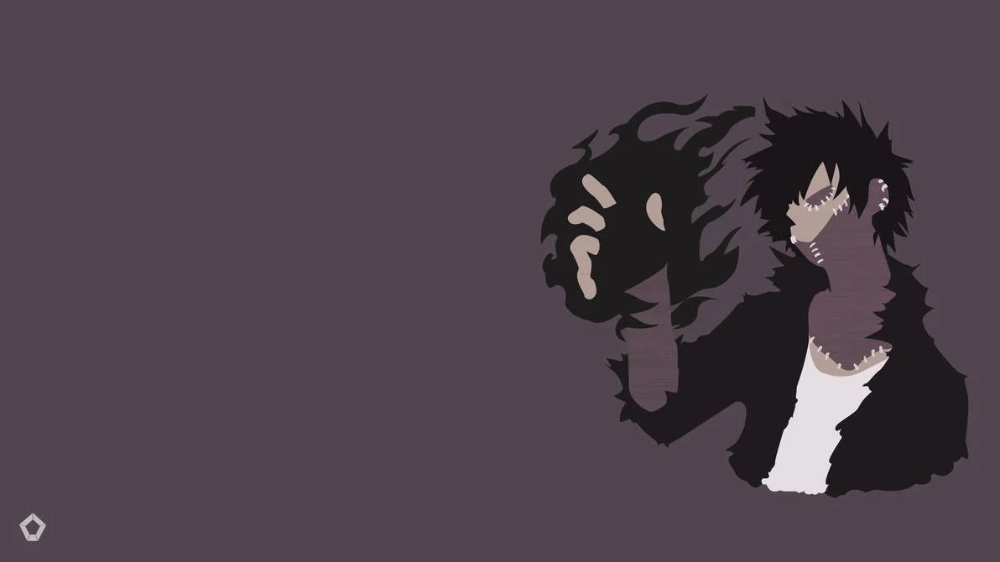

Y este es el párrafo de inicio donde vamos a explicar las cosas increíbles que se pueden hacer con ramas
Los blogs son la mejor forma de compartir información y tus ideas. Mucho más que salir en Youtube o ir a conferencias. Excepto si eres rockstar. Pero estadísticamente no lo eres..... por ahora.

Gracias por ver